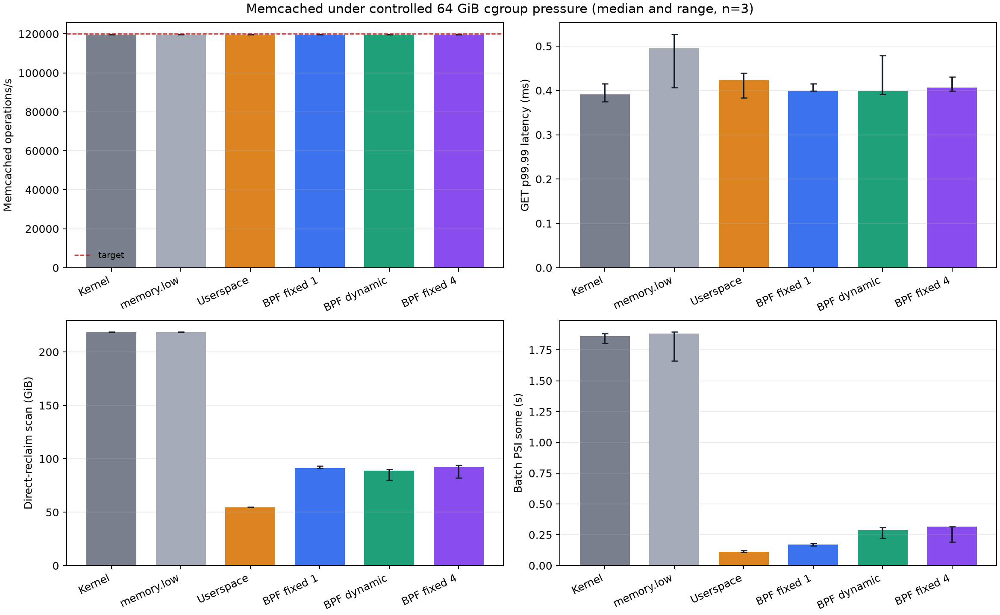
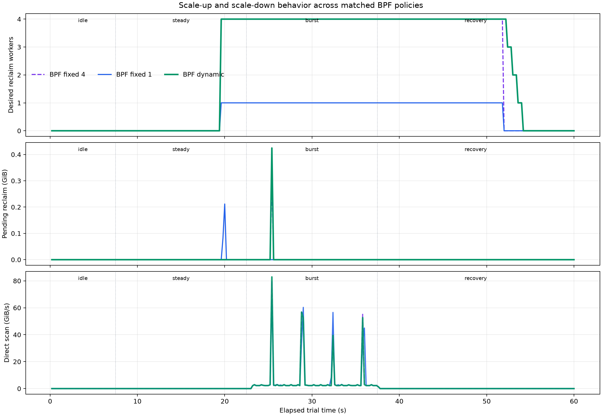
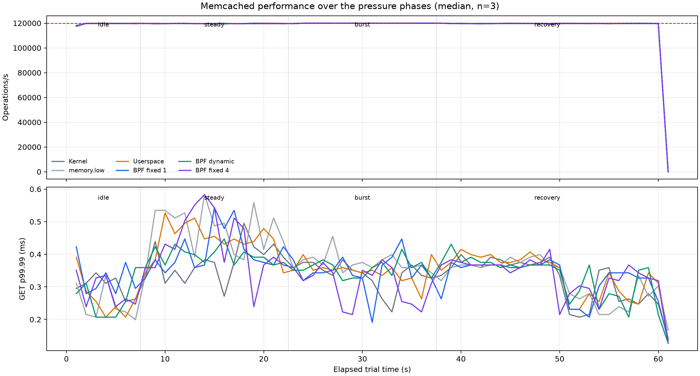

The experiment finds a strong benefit from proactive targeted reclaim, but it does not find a worthwhile benefit from scaling the BPF reclaim pool from one to four workers for this workload.
memory.high events by
69.7%, direct-reclaim scanning by 59.3%, batch PSI some time by 83.9%, and batch-cgroup
CPU time by 16.2% in matched trials.memory.reclaim controller was the strongest on direct scanning (75.1% less)
and batch PSI (93.9% less). Its reclaim-caller CPU is outside the batch cgroup, so its
batch-CPU number is not directly comparable with the BPF modes.memory.low alone did not help this hierarchy: its direct scanning and memory.high
events were effectively identical to the kernel baseline.The supported claim is therefore: BPF-driven proactive reclaim provides substantial value, but the current pending/capacity-based concurrency scaler does not provide incremental value on this Memcached-plus-clean-cache workload.

Values are medians across three repetitions. Bracketed values are the full observed range.
| Policy | Operations/s | GET p99.99 (ms) | memory.high events |
Direct scan (GiB) | Batch PSI some (s) | Batch CPU (s) |
|---|---|---|---|---|---|---|
| Kernel | 119,731 [119,647-119,818] | 0.391 [0.375-0.415] | 58,189 [58,050-58,492] | 218.63 [218.61-218.65] | 1.861 [1.803-1.884] | 157.0 [153.0-160.8] |
memory.low |
119,725 [119,688-119,757] | 0.495 [0.407-0.527] | 58,330 [58,116-58,513] | 218.64 [218.62-218.65] | 1.883 [1.662-1.896] | 154.8 [149.1-158.1] |
| Userspace | 119,740 [119,732-119,854] | 0.423 [0.383-0.439] | 17,621 [17,617-17,633] | 54.36 [54.31-54.74] | 0.110 [0.108-0.123] | 127.2 [121.0-127.6] |
| BPF fixed-one | 119,743 [119,711-119,778] | 0.399 [0.399-0.415] | 17,651 [17,648-17,675] | 91.47 [91.17-93.14] | 0.172 [0.160-0.180] | 125.5 [123.3-133.4] |
| BPF dynamic | 119,726 [119,724-119,760] | 0.399 [0.391-0.479] | 17,603 [17,584-17,622] | 89.03 [80.18-90.09] | 0.290 [0.225-0.309] | 134.7 [127.1-135.5] |
| BPF fixed-four | 119,738 [119,726-119,743] | 0.407 [0.399-0.431] | 17,620 [17,615-17,629] | 92.09 [82.21-93.98] | 0.316 [0.193-0.317] | 132.3 [124.8-133.5] |
All policies had a median GET p99 of 0.175 ms except fixed-four, whose median was 0.167 ms. Every trial had zero Memcached misses and zero connection errors.
The BPF kthreads run in the batch cgroup, so their CPU is included in BPF batch CPU. The
userspace controller threads remain in the benchmark's cgroup; CPU spent by their synchronous
memory.reclaim calls is not included in userspace batch CPU. CPU comparisons among kernel and
BPF modes are meaningful, but the userspace CPU reduction in the table is not an end-to-end CPU
reduction.
Percentage reductions are calculated within each repetition before taking the median. A negative reduction is a regression.
| Candidate versus baseline | Throughput change | High-event reduction | Direct-scan reduction | Batch-PSI reduction | Batch-CPU reduction | p99.99 reduction |
|---|---|---|---|---|---|---|
| Userspace vs kernel | +0.078% | 69.72% | 75.14% | 93.88% | 20.91% | -12.28% |
| BPF fixed-one vs kernel | +0.010% | 69.62% | 58.17% | 90.74% | 17.95% | -2.05% |
| BPF dynamic vs kernel | +0.024% | 69.72% | 59.28% | 83.92% | 16.21% | -6.40% |
| BPF dynamic vs fixed-one | +0.011% | 0.30% | 3.27% | -61.25% | -3.11% | 0.00% |
| BPF dynamic vs fixed-four | -0.002% | 0.07% | 4.13% | 2.17% | -1.84% | 1.97% |
For dynamic versus fixed-four, the paired direct-scan reduction ranged from -8.30% to 12.93%, and the PSI reduction ranged from -16.21% to 8.60%. Three repetitions do not support a claim that either policy is better on those metrics.
The policies authorized closely matched reclaim volume: fixed-one authorized 74.89 GiB, dynamic authorized 74.82 GiB, and fixed-four authorized 74.83 GiB at the median. BPF reclaim returned about 75.5-75.6 GiB for each policy. The comparison is therefore primarily about how the same work is scheduled, not about allowing dynamic BPF to reclaim more memory.

The controller remained at zero workers through idle and most of steady state. When the parent crossed the control threshold at about 19.6 seconds:
Dynamic used 134.8 desired-worker slot-seconds, fixed-four used 129.6, and fixed-one used 32.4. The extra concurrency did consistently reduce direct scanning versus fixed-one by 2.67-12.05% per repetition, but the median saving was small and came with worse PSI and CPU. Fixed-four showed the same pattern, which points to limited marginal scaling in memcg reclaim rather than a failure to wake the BPF kthreads.
The pending-work graph is a 200 ms point sample. Workers can drain a queue between samples, so it is useful for timing but not a reliable measure of the true peak queue depth.

The service ran at a fixed open-loop target rather than maximum throughput. This makes latency comparable across reclaim policies and prevents a policy from appearing faster merely because it completed fewer requests. All six policies delivered 99.7-99.9% of the 120,000 operations/s target. No phase shows a sustained throughput collapse or a latency step associated with the burst.
The experiment therefore demonstrates that proactive reclaim improves sibling progress and reduces reclaim work without hurting Memcached. It does not demonstrate a Memcached latency benefit at this load. A separate offered-load sweep near service saturation is required before claiming a tail-latency improvement.
The workload design borrows the Memcached request mix used by Hermit: a Facebook-like 99.8% GET / 0.2% SET mix and Zipf 0.99 key distribution. Hermit is an important positive reference because its adaptive reclaimer normally used at most two cores, scaled to four during bursts, and beat fixed reclaim-core counts. This experiment deliberately adds fixed-one and fixed-four controls to test whether the same scaling claim holds for the branch's memcg helper.
The memory scale also follows public systems-memory examples rather than the original 1 GiB selftest. Hermes evaluates proactive reclamation on services with tens of GiB of memory, while the TierScape artifact includes a 40 GiB Memcached setup. TMO and DAMON_RECLAIM provide additional examples of proactive, feedback-controlled memory reclamation.
7.2.0-rc6-00638-g02201107f4d6-dirty, commit 02201107f4d6, built with clang/LLD
23; CONFIG_MEMCG=y, CONFIG_PSI=y, and MGLRU disabled.codex/bpf-waitq-memcached-eval, based on
origin/bpf-waitq-kthread-reclaim-v1.5f634d171b83efca9640c5a87606c47b34d3d330, 16 threads and one connection per thread.memory.max: 64 GiB.memory.high: 44.8 GiB.memory.low policy: service protection of 28.8 GiB.The unwritten ext4 extents produce clean page-cache pressure without storage reads. Each trial faulted about 129 GiB by wrapping over the 80 GiB file. This removes device latency and isolates reclaim scheduling, but it is not a model of remote-memory, swap, or SSD I/O.
Each trial used a fresh Memcached process and a fresh prefill, then ran for 60 seconds:
| Phase | Duration | Batch fault rate |
|---|---|---|
| Idle | 7.5 s | 0 GiB/s |
| Steady | 15 s | 1.6 GiB/s |
| Burst | 15 s | 6.4 GiB/s |
| Recovery | 22.5 s | 0.8 GiB/s for the first half, then idle |
The six policies were kernel reclaim, service memory.low, a four-thread userspace
memory.reclaim controller, BPF fixed-one, BPF dynamic 1-4, and BPF fixed-four. The proactive
policies used the same 200 ms control epoch, 16 MiB reclaim quantum, parent target, refault
budget, and authorization formula. Trial order was cyclically rotated for each of three
repetitions.
The result uses median and full range because three repetitions are enough to reject the large scaling effect hypothesized here, but not enough for a precise confidence interval. The paired tables compare policies within the same repetition.
The automated quality gate passed:
memory.max events, OOM events, or OOM kills;The VM boot log has a QEMU CPU-feature dependency notice and an ACPI _OSC message. Neither
appeared during the workload or correlated with a trial failure.
See QA.md, trial_metrics.csv, policy_summary.csv, paired_comparisons.csv, and the executed analysis.ipynb for the auditable calculations.
The controller starts reclaiming the batch cgroup before the shared parent forces faulting
threads into direct reclaim. That moves reclaim work away from the allocation path. The effect
is visible in lower memory.high events, less direct scanning, less batch PSI, and less batch
CPU. Targeting the batch cgroup also avoids reclaiming Memcached's anonymous item cache.
memory.low protects the service cgroup, but it does not create free memory or proactively
reclaim the batch cgroup. In this setup Memcached was already below its protected allowance;
the parent still crossed memory.high, so batch faulting threads performed essentially the
same direct reclaim as the unprotected kernel baseline.
The dynamic controller estimates capacity from pages requested per epoch. Pending work exceeded that estimate as soon as control activated, so it jumped directly to four and remained there. The fixed controls show weak marginal scaling from additional BPF workers: direct scanning fell slightly, but PSI and CPU got worse. Plausible causes include shared memcg/LRU serialization, repeated scans of the same reclaimable population, and synchronization overhead around a single target memcg. The present data identifies the scalability symptom but does not isolate which kernel lock or scan path dominates.
The userspace controller writes synchronously to memory.reclaim, while the BPF workers call
bpf_try_to_free_mem_cgroup_pages() directly. Their similar authorization volume but different
direct-scanning outcome suggests that API completion semantics, retry behavior, or timing also
deserve investigation. The userspace reclaim caller is also accounted outside the batch cgroup,
so a future comparison needs whole-guest CPU accounting. These are inferences from the results,
not proven root causes.
The controller's service feedback is workingset_refault_file. Memcached's item cache is
anonymous memory, so this signal stayed at zero. The experiment primarily exercised parent
error feedback, not workload-hotness feedback. A production Memcached policy should incorporate
anonymous refault/activity, PSI, or a service SLO signal rather than relying on file refaults.
memory.reclaim and the BPF helper with the same single worker and trace
try_to_free_mem_cgroup_pages() retries, LRU locks, scan/steal ratio, and reclaim duration.The exact benchmark configuration is in config.json, and guest provenance is in environment.txt. The run used:
BPF_MEMCG_VM_CPUS=48 \
BPF_MEMCG_VM_MEMORY=96G \
BPF_MEMCG_VM_DISK_IMAGE=.kdev/bench-work/memcg-reclaim-96g.img \
BPF_MEMCG_VM_BATCH_FILE=batch.dat \
tools/testing/selftests/bpf/run_bench_memcg_reclaim_vm.sh \
--workload memcached \
--modes kernel,memory-low,userspace,bpf-fixed-1,bpf,bpf-fixed-max \
--repeat 3 \
--duration-scale 3.75 \
--parent-max 64G \
--batch-threads 16 \
--memcached-value 1024 \
--memcached-threads 12 \
--memtier-threads 16 \
--memtier-clients 1 \
--memtier-rate 120000 \
--memtier-bin "$PWD/.kdev/tools/memtier-benchmark-2.5.1/memtier_benchmark" \
--output "$PWD/tools/testing/selftests/bpf/results/memcg-reclaim-memcached-64g-20260821" \
--seed 20260821 \
--verbose
The disk image contained a preallocated 80 GiB batch.dat. The checked-in analyzer can be run
with:
python3 tools/testing/selftests/bpf/analyze_memcg_reclaim_memcached.py \
tools/testing/selftests/bpf/results/memcg-reclaim-memcached-64g-20260821